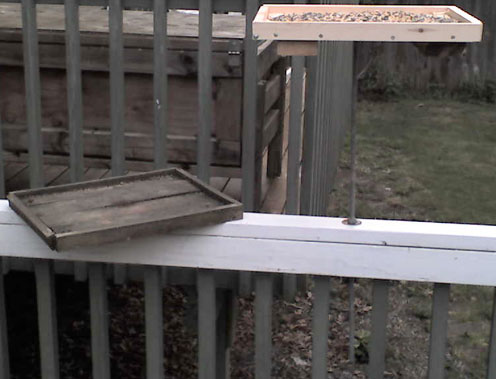
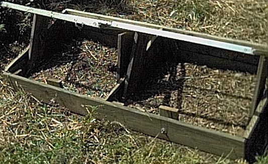
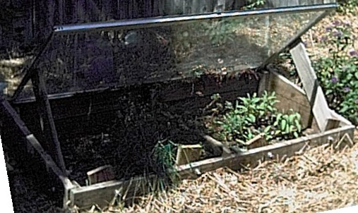
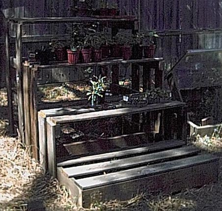
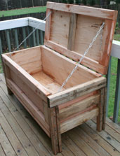
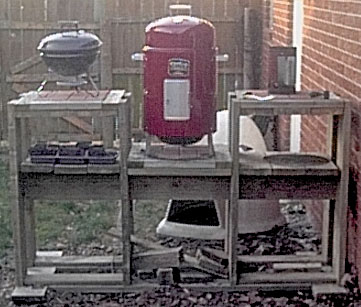
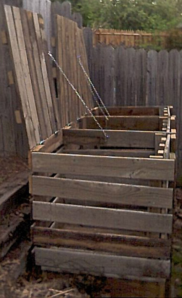
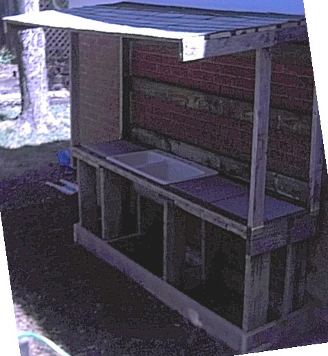
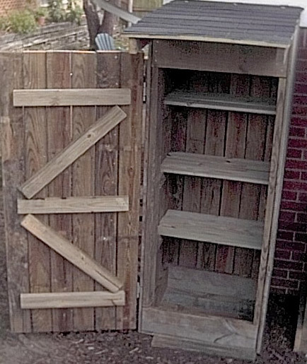
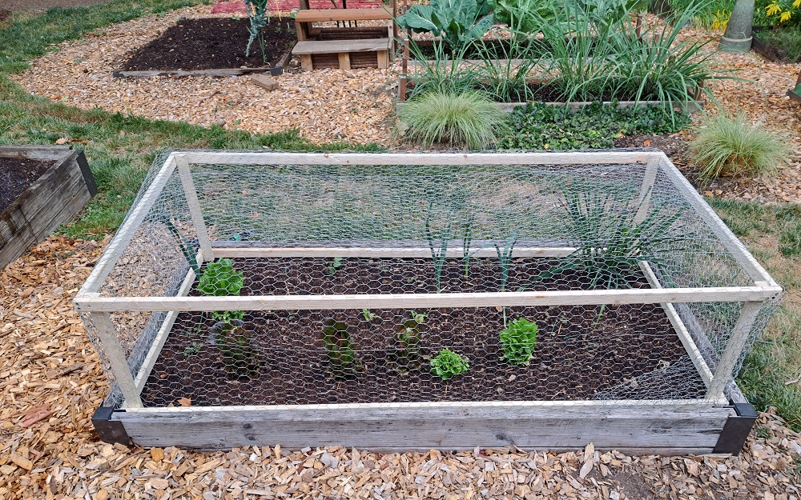

Not to disparage The New Yankee Workshop, I do love to watch that show. Norm Abram does Wonderful things with wood. It just reminds me of the old joke comparing cooking with recipes to Science Fiction that ends with "Yeah, like that's going to happen". This is woodworking for rank amateurs. Those of you that are more experienced can stop laughing now. I work in technology for a living, not Gardening Structures :-). I had fun with this and built solid structures that won't fall apart any time soon. I have seen the free construction plans for gardening structures scattered around the Internet. I am impressed. But after looking at most of them I won't be doing these plans any time soon either. Some seem a tad complicated to me, others did not fit the need I had. None had any helpful hints or instructions on how to build their complicated designs. For example, almost all the cold frames used wooden windows and hinges to attach the windows. In the summer, those windows can get in the way or, if the frame is metal, the hinges can be hard to attach. The frame plans below do not have hinges, the windows are removable. I also try very hard to allow some room for slop when putting together the projects. I am not exactly perfect when cutting everything. The boards that I have to work with are not always flat and straight. I also have included instructions and helpful hints on how I built the items (as much as I can remember).
It started with an old deck that was 18 feet by 24 feet. I am sure that the deck (at one time) looked fine, but the person that built the deck used standard nails instead of decking screws and (as far as I could tell) had never applied any kind of protection to the surface. Whoever built the deck also used cheap pine boards (lots of knots). In addition, the deck was built far away from the house, pretty useless for a deck. It was, however, a perfect place for a garden for Rose. But this page is not how to build a deck, this is how to use the wood from a deck that you don't want (or any other structure that you don't need). The boards did look like they may have been treated wood. If your boards are treated with chromated copper arsenate (CCA) PLEASE be very careful. Do NOT use CCA treated wood for compost bins or any structure that will be in contact with food. Use untreated wood for these structures and use a Treated Wood Alternative. Data has shown that CCA treated wood is not as safe as previously thought. The USDA Forest Service Forest Products Laboratory has a most excellent Wood Handbook on everything you ever wanted to know about wood. There are many many more publications available.
I tore down the deck, removed the nails, and ended up with a stack of wood about 3 feet wide, 3 feet high and 12 feet long. The stack consisted of different sizes and lengths of wood. Throw in a window and sliding glass door replacement (keeping the old windows and the old sliding glass door) and you have the material for a large and a small cold frame.
For her garden, Rose needed a few structures. We first discussed a compost bin and what her specifications / requirements were. A good book to look at is Rodale's Illustrated Encyclopedia of Gardening and Landscaping Techniques by Barbara Ellis. I do not have any monetary interest in this book, it is just a very good book.
When I started building my projects, I learned some things about simple carpentry:
1) Wood Is Not The Size They say it is
2) The right tools are important, and they really don't cost that much
3) Technique, a few hints and tricks help make the job go easier.
Now for the projects. I have tried to list them in level of complexity:

- Bird Platform Feeder
- Cold Frame, Small
- Cold Frame, Large
- Outside Seedling Shelves
- Worm Bin
- Bar-B-Q Table
- Compost Bin
- Potting Bench
- Potting Shed
- Rabbit and Deer Proof Enclosure - Rain Barrels For Watering The Landscape
- Rain Barrels For Watering The Landscape